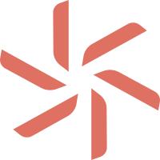

<!DOCTYPE html>
<html lang="en">
<head>
    <meta charset="UTF-8">
    <meta name="viewport" content="width=device-width, initial-scale=1.0">
    <title>test | 10X</title>
    <link rel="canonical" href="https://10xvi.github.io/blank/">
    <meta property="og:title" content="test | 10X">
    <meta property="og:url" content="https://10xvi.github.io/blank/">
    <meta property="og:site_name" content="10X">
    <meta property="og:type" content="website">
    <meta name="twitter:card" content="summary_large_image">
    <meta name="twitter:title" content="test | 10X">
    <link rel="icon" type="image/svg+xml" href="../assets/logo-mark.svg">
    <link rel="icon" type="image/png" sizes="32x32" href="../assets/favicon-32.png">
    <link rel="apple-touch-icon" href="../assets/apple-touch-icon.png">
    <link rel="preconnect" href="https://fonts.googleapis.com">
    <link rel="preconnect" href="https://fonts.gstatic.com" crossorigin>
    <link rel="stylesheet" href="https://fonts.googleapis.com/css2?family=Space+Grotesk:wght@400&display=swap">
    <link rel="preload" href="../assets/fonts/wix-madefor-text-400-latin.woff2" as="font" type="font/woff2" crossorigin>
    <style>
        @font-face {
            font-family: 'Wix Madefor Text';
            font-style: normal;
            font-weight: 400;
            font-display: swap;
            src: url(../assets/fonts/wix-madefor-text-400-latin.woff2) format('woff2');
        }

        *, *::before, *::after { box-sizing: border-box; }

        html, body {
            margin: 0;
            padding: 0;
            background: #fff;
            color: #000;
        }

        body {
            font-family: 'Wix Madefor Text', 'Helvetica Neue', Helvetica, Arial, sans-serif;
            -webkit-font-smoothing: antialiased;
        }

        a { color: inherit; text-decoration: none; }

        /* POD.AGI embed, full viewport like the Wix HTML embed */
        .pod-stage {
            height: 100vh;
            width: 100%;
        }
        .pod-stage iframe {
            display: block;
            width: 100%;
            height: 100%;
            border: 0;
        }

        /* Empty band between the embed and the footer (Wix stops growing it at 1600px wide) */
        .spacer {
            height: calc(0.3952507 * min(100vw, 1600px));
            background: #fff;
        }

        /* Footer. Desktop scales with the viewport like the Wix Studio layout (1440px = the reference). */
        .site-footer {
            position: relative;
            display: grid;
            grid-template-columns: 1fr 1fr;
            align-items: start;
            height: max(360px, 22.624vw);
            background: #fff;
            font-size: 1.09375vw;
        }

        .footer-logo {
            justify-self: center;
            display: block;
            width: 15.625vw;
            height: 15.625vw;
            margin-top: 6vw;
        }
        .footer-logo img {
            display: block;
            width: 100%;
            height: 100%;
        }
        @keyframes footer-logo-spin {
            0% { transform: rotate(360deg); animation-timing-function: cubic-bezier(.645, .045, .355, 1); }
            60%, 100% { transform: rotate(0deg); }
        }
        @media (prefers-reduced-motion: no-preference) {
            .footer-logo img {
                animation: footer-logo-spin 5s linear infinite;
                animation-play-state: paused;
            }
            .footer-logo.is-in-view img { animation-play-state: running; }
        }

        .footer-right {
            position: relative;
            padding-top: 6vw;
        }

        .footer-links {
            font-family: 'Space Grotesk', sans-serif;
            text-transform: uppercase;
        }
        .footer-nav {
            display: flex;
            flex-direction: column;
            align-items: flex-start;
            line-height: normal;
        }
        .footer-nav a:hover { color: #6e6e6e; }
        .footer-legal {
            display: flex;
            flex-direction: column;
            align-items: flex-start;
            line-height: 1.6;
        }
        .footer-legal a { white-space: nowrap; }

        .footer-contact {
            position: absolute;
            top: 6.04vw;
            left: 52%;
            font-family: 'Space Grotesk', sans-serif;
            line-height: 1.6;
        }
        .footer-contact p { margin: 0; }

        .footer-social {
            display: flex;
            gap: 12px;
            margin: 18px 0 0;
            padding: 0;
            list-style: none;
        }
        .footer-social a { display: block; width: 20px; height: 20px; }
        .footer-social img { display: block; width: 20px; height: 20px; }

        .footer-copy {
            position: absolute;
            right: 1.0146vw;
            /* centre of the line sits max(24.5px, 1.86vw) above the bottom edge, as on Wix */
            bottom: calc(max(24.5px, 1.86vw) - 0.8em);
            margin: 0;
            line-height: 1.6;
        }

        /* Tablet (Wix breakpoint 751-1000px): logo hidden, 12px text */
        @media (max-width: 1000px) {
            .site-footer {
                height: 360px;
                font-size: 12px;
            }
            .footer-logo { visibility: hidden; }
            .footer-right {
                padding-top: 8vw;
                padding-left: .68vw;
            }
            .footer-contact {
                top: 7.94vw;
                left: 50%;
            }
            .footer-social { margin-top: 15px; }
            .footer-copy {
                right: 2vw;
                bottom: 2vw;
            }
        }

        /* Mobile (Wix breakpoint up to 750px): Wix's column positions, pulled in on very narrow
           screens where the original overflows and cuts off the social icons. */
        @media (max-width: 750px) {
            .site-footer {
                display: block;
                font-size: 13px;
            }
            .footer-logo { display: none; }
            .footer-right {
                position: static;
                padding: 6vw 0 0 min(27.5vw, 76.3vw - 144px, 100vw - 276px);
            }
            .footer-contact {
                top: 6.2vw;
                left: min(76.3vw, 100vw - 132px);
            }
            .footer-legal { margin-top: 0; }
            .footer-social { margin-top: 14px; }
            .footer-copy {
                right: auto;
                left: 2vw;
                bottom: 6vw;
            }
        }
    </style>
</head>
<body>

    <header class="pod-stage">
        <iframe src="pod.html" title="Embedded Content" loading="eager"></iframe>
    </header>

    <main>
        <section class="spacer" aria-hidden="true"></section>
    </main>

    <footer class="site-footer">
        <a class="footer-logo" href="../" aria-label="Homepage">
            
        </a>

        <div class="footer-right">
            <div class="footer-links">
                <nav class="footer-nav" aria-label="Site">
                    <a href="../#problem">The Problem</a>
                    <a href="../#solution">The Key</a>
                    <a href="../#paradigm">The Paradigm Shift</a>
                    <a href="../#vision">The Path</a>
                    <a href="../#imperative">The Imperative</a>
                    <a href="../#faq">FAQ</a>
                </nav>
                <div class="footer-legal">
                    <a href="../">Terms &amp; Conditions</a>
                    <a href="../">Privacy Policy</a>
                    <a href="../">Accessibility Statement</a>
                </div>
            </div>

            <div class="footer-contact">
                <p>J@1OX.VI</p>
                <p class="footer-cities">TYO, JP<br>SFO, CA</p>
                <ul class="footer-social" aria-label="Social Bar">
                    <li><a href="https://www.linkedin.com/company/wix-com" target="_blank" rel="noopener"></a></li>
                    <li><a href="https://www.facebook.com/WixStudio" target="_blank" rel="noopener"></a></li>
                    <li><a href="https://twitter.com/WixStudio" target="_blank" rel="noopener"></a></li>
                    <li><a href="https://www.instagram.com/wix/" target="_blank" rel="noopener"></a></li>
                </ul>
            </div>
        </div>

        <p class="footer-copy">© 2025 by 1OX.VI</p>
    </footer>

    <script>
        // Like Wix, the footer logo only spins while it is on screen.
        (function () {
            var logo = document.querySelector('.footer-logo');
            if (!logo || !('IntersectionObserver' in window)) return;
            new IntersectionObserver(function (entries) {
                entries.forEach(function (entry) {
                    logo.classList.toggle('is-in-view', entry.isIntersecting);
                });
            }).observe(logo);
        })();
    </script>

</body>
</html>
